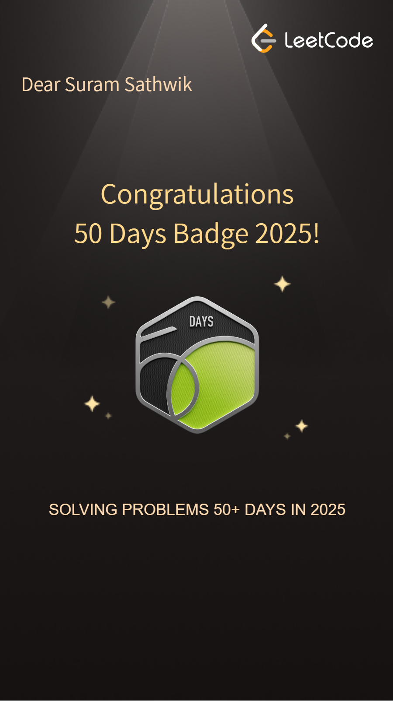
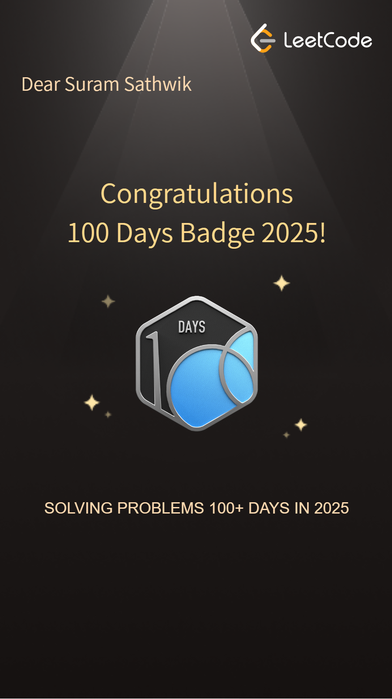
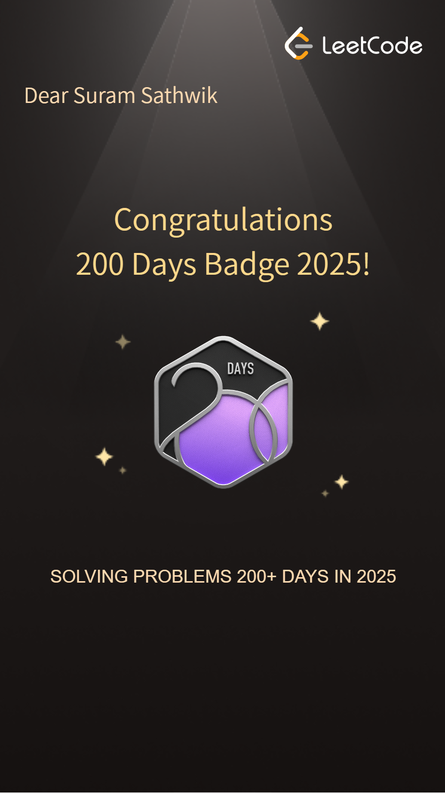
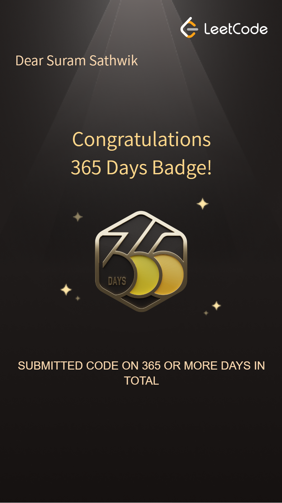

Languages
Python, Java (OOPS, DSA), C, Kotlin
Undergraduate, Computer Science — Jawaharlal Nehru Technological University.
I am a Computer Science undergraduate specializing in Java, DSA, and web development, with a strong interest in building practical, scalable software solutions. I enjoy solving complex problems, writing clean code, and transforming ideas into functional applications through hands-on projects and continuous learning.
I am passionate about problem-solving and skilled in Java, Data Structures & Algorithms, and web development. As a Full Stack Developer Intern at QClairvoyance, I developed interactive LMS features and engineered a Retrieval-Augmented Generation system for context-aware educational support. My recent work includes a Student Grievance Portal designed with role-based access, admin workflows, and seamless complaint tracking for improved transparency.
Python, Java (OOPS, DSA), C, Kotlin
HTML, CSS, JavaScript
PHP, Node.js, RESTful APIs, JWT Authentication
MongoDB, Mongoose (Schema Design), MySQL
Git, GitHub, Docker, VS Code, XAMPP
Consistently solve algorithmic challenges (500+ problems) to maintain and improve data structures and problem-solving skills. Focus areas include arrays, linked lists, trees, and dynamic programming; primary language: Java.
Ongoing




Built a financial fraud detection and money trail analysis platform using Node.js, React.js, PostgreSQL, Python, and D3.js, processing 1,000+ transactions to detect linked accounts and visualize fraud networks.
2026
Developed a concurrent web scraping and ETL pipeline using Python, Flask, BeautifulSoup, and ThreadPoolExecutor, reducing attendance data retrieval time by approximately 40% while using Google Sheets for cost-effective storage and visualization.
2025
Developed a full-stack leave management system using React, TypeScript, Node.js, Express, and MongoDB, automating email-based requests, approval workflows, employee management, real-time dashboards, and reporting for 200+ employees across 12 stations.
2025
Built an online grievance management system for students to submit and track complaints easily. Integrated an admin panel for efficient issue tracking and resolution workflows, improving transparency and communication between students and institutional authorities.
Aug 2025 – Oct 2025
CampusMess is a full-stack web application designed to help hostel students view the daily mess menu in real time. The menu updates dynamically and automatically disappears after 24 hours, ensuring only the current day’s menu is shown. Users can add menu items with optional images and view hostel-specific, date-based menus.
Nov 2025 – Dec 2025
Created an Android alarm app that forces the user to complete a task (solve a math problem or type a sentence) to stop the alarm. Ensured the alarm rings reliably even when the phone is locked or the app is closed. Tested on a real Android phone and confirmed stable, crash-free behavior.
Jan 2026 – Feb 2026
Dec 2025 – Jan 2026
Bachelor of Technology in Computer Science — CGPA: 8.64
Percentage: 98.3%
CALG Coefficient, Equation & Summary Generator